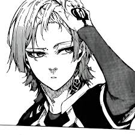

Personality Traits

ไกเซอร์ถูกแสดงออกมาในบทบาทชายหนุ่มผู้เย่อหยิ่งและมีปมด้อย เขาเห็นทุกคนรอบตัวเขาเป็นเพียงนักแสดงตัวเล็กๆ เมื่อเทียบกับบทบาทหลักที่ยิ่งใหญ่ของเขาในฐานะดาราดังของโลก แม้ว่าเขาจะเย่อหยิ่งและหยาบคายอย่างแอบแฝงต่อผู้คนที่เขามองว่าด้อยกว่าเขา แต่เขาก็ไม่ได้หยาบคายโดยไม่จำเป็นต่อเพื่อนร่วมทีมของเขา แต่จะทำให้พวกเขาอยู่ในสถานะของพวกเขาเมื่อพวกเขาพูดออกมาโดยไม่จำเป็น แม้ว่าจะเพื่อตัวเขาเองก็ตาม แม้ว่าไกเซอร์จะเย่อหยิ่งและหยาบคาย แต่เขาก็รู้ว่าเมื่อใดควรควบคุมตัวเองเมื่ออยู่กับคนที่ดีกว่าและเหนือกว่าเขาอย่างชัดเจน เช่น หัวหน้าทีมของเขาและกองหน้าที่ดีที่สุดในโลกอย่างโนเอล โนอา